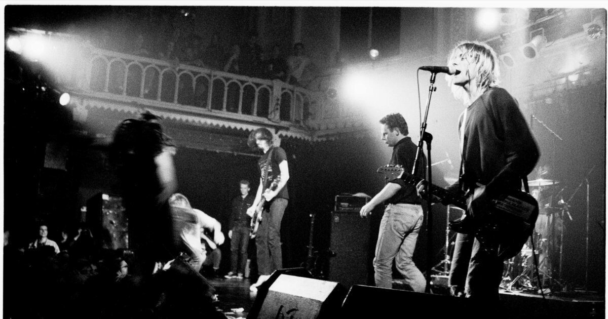
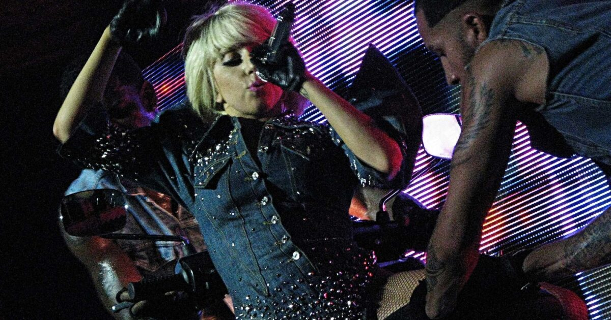

Archief
Paradiso opende voor het eerst haar deuren op 30 maart 1968. Het ‘Cosmisch Ontspanningscentrum’ van de hippies groeide uit tot een professionele concertzaal met meerdere programma’s per dag en op verschillende locaties in Amsterdam.
Struin door het hele Paradiso-archief, dat iedere dag wordt verrijkt, zoek dat memorabele programma en draag je herinnering bij!
Voorgeschiedenis van Paradiso →
Archief van het programma van Paradiso
-

7 feb 2007
Amy Winehouse (nacht concert)
-

24 nov 1991
Nirvana
-

2 dec 2009
Fever Ray
-

15 juli 2001
Herman Brood herdenking (besloten)
-

1 juli 2006
James Brown
-

24 juli 2009
Lady Gaga
Carousel met opkomend programma van Paradiso
-
1968
-
Openingsavond met CCC Inc., Supersister, Circus
20 Mei
-
Pink Floyd
19 April
-
De Levende Opjekten Sjoo (Hans Frisch)
21 Okt
-
Wereldrecord drummen door Bennie Groen
24 Dec
-
1969
-
Discussie over toekomst Paradiso
20 Jan
-
Sun Ra Arkestra
23 Mrt
-
De Zangeres Zonder Naam, Dr Strangely Strange
19 apr